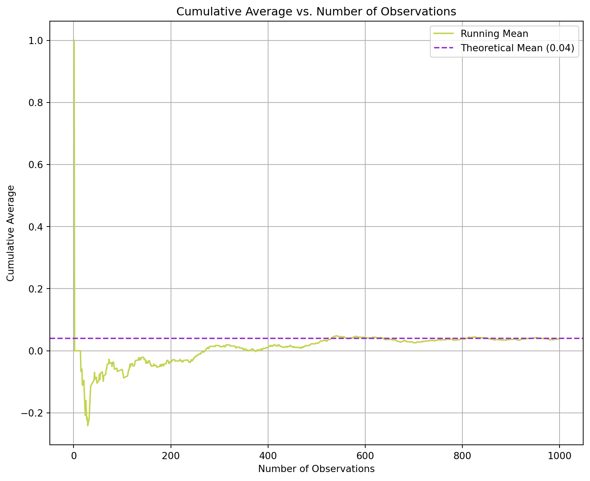
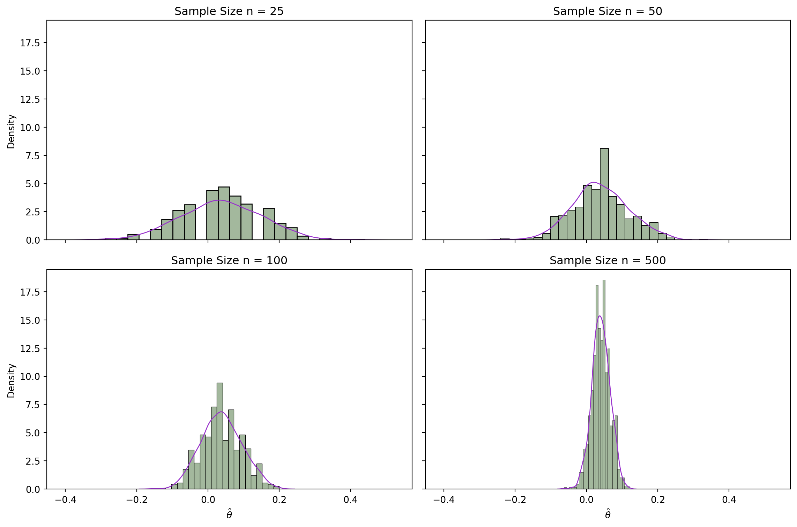

import numpy as np
#set seed to ensure reproducibility
np.random.seed(42)
#define probabilities
prob_a = 0.22
prob_b = 0.18
#generate 1000 draws from each
draws_a = np.random.binomial(1, prob_a, 1000)
draws_b = np.random.binomial(1, prob_b, 1000)A/B Testing a Call to Action
Simulating Key Ideas from Classical Frequentist Statistics
Introduction
Imagine you have a new and your main goal is to grow a community. On your landing page, you highlight a place where visitors can sign up to receive your newsletter. What your landing page says has an impact!
You are deciding between two possible “calls to action” (CTAs).
To truly measure which CTA will drive the most impact, you run an A/B test between the following CTA’s:
a. CTA A reads "Sign up for our newsletter here!"
b. CTA B reads "Stay in the loop by signing up for our newsletter!"Before we get to running the A/B test, let’s make sure we understand what an A/B tests is.
Note
An A/B test is a controlled experiment in which groups are randomly assigned to two versions of a feature or variable to determine which performs better on specified metrics.
In our case, our CTA’s are compared to determine which results in higher sign-up rates.
The A/B Test as a Statistical Problem
In our A/B test we can translate to a formal statistical framework.
Each visitor’s decision is a binary event, in which they decide to either sign up (1) or not (0). With this we are able to model each visitor’s decision as a draw from a Bernoulli distribution with the core parameter \(\pi\) – the probability of signing up.
Note
A Bernoulli distribution is a discrete probability distribution for a single experiment that has only two outcomes.
Our CTA is the variable that we are testing, so the parameter, probability of signing up, \(\pi\) may shift as a result of the wording of our CTA’s. CTA A has sign-up probability \(\pi_A\), and visitors who see CTA B have sign-up probability \(\pi_B\). Each visitor can either sign up (1) or not (0).
In order to determine the difference in the CTAs impact, we can take the difference between the two sign-up rates: \(\theta = \pi_A - \pi_B\)
Because we cannot know the “true” probability of every possible visitor, we use an estimator, \(\theta\) based on our test data. This estimator, is the difference between the sample means of the two groups. \(\hat\theta = \bar{X}_A - \bar{X}_B\). In this context, the sample mean is simply the proportion of successful sign-ups observed in each group. \(\bar{X}_A = \hat\pi_A\) and \(\bar{X}_B = \hat\pi_B\).
Simulating Data
Realistically, we don’t know the true values of \(\pi_A\) and \(\pi_B\), but for the purpose of this exercise we will set them ourselves so that we can study the behavior of our estimator when we know the truth.
Suppose \(\pi_A = 0.22\) and \(\pi_B = 0.18\), so the true difference is \(\theta = 0.04\).
First 10 draws from A: [0 1 0 0 0 0 0 1 0 0]
First 10 draws from B: [0 0 1 0 0 0 0 1 0 0]The Law of Large Numbers
Note
The Law of Large Numbers, LLN, states that as the number of independent, identical trials increases, their observed average approaches the expected value. While small samples deviate from their average dramatically, a large number of trials will produce results very close to the true probability.
For our estimator, we can utilize the LLN to determine our sample sizes. As we saw, we simulated 1,000 trials of each CTA to give us confidence that \(\hat\theta = \bar{X}_A - \bar{X}_B\) will be close to the true \(\theta\).
import numpy as np
import matplotlib.pyplot as plt
#calculate differences
diff = draws_a - draws_b
#cumulative sum and count
cum_sum = np.cumsum(diff)
obs = np.arange(len(diff))
#calculate cumulative avg
cum_avg = cum_sum/obs/tmp/ipykernel_73689/927848047.py:13: RuntimeWarning: invalid value encountered in divide
cum_avg = cum_sum/obs
Our resulting plot demonstrates the LLN, in which the cumulative average stabilizes around the theoretical mean as the number of observations increases. Our theoretical mean, taken by calculating \(\bar{X}_A - \bar{X}_B\), of \(0.04\) becomes the center of our cumulative sum calculations as the number of observation increases.
Bootstrap Standard Errors
Now that we “trust” our estimator, the next natural question is: how precise is it? We would like to report not just a point estimate of \(\theta\) but also a confidence interval that communicates our uncertainty.
Bootstrapping
Bootstrapping is a resampling technique used to estimate the approximate sampling distribution. The algorithm is as follows:
From our observed sample size, \(n\), we draw \(n\) observations with replacement – this is the bootstrap sample.
We compute \(\hat\theta\) on the bootstrap sample.
We repeat steps 1 and 2 for a determine amount of times.
The standard deviation of \(\hat\theta_1 ,,, \hat\theta_B\) is our bootstrap standard error, \(SE\).
We will compare this bootstrapped standard error to our analytical standard error whose formula is as follows: \[ SE(\hat\theta) = \sqrt{\frac{\hat\pi_A(1 - \hat\pi_A)}{n_A} + \frac{\hat\pi_B(1 - \hat\pi_B)}{n_B}} \] where \(\hat\pi_A\) and \(\hat\pi_B\) are the sample proportions and \(n_A\) and \(n_B\) are the sample sizes.
import numpy as np
#set seed to ensure reproducibility
np.random.seed(42)
n_iterations = 1000
boot_a = []
boot_b = []
boot_diffs = []
draws_a = np.random.binomial(1, prob_a, 1000)
draws_b = np.random.binomial(1, prob_b, 1000)
for i in range(n_iterations):
sample_a = np.random.choice(draws_a, size=len(draws_a), replace=True)
sample_b = np.random.choice(draws_b, size=len(draws_b), replace=True)
mean_a = np.mean(sample_a)
mean_b = np.mean(sample_b)
boot_a.append(mean_a)
boot_b.append(mean_b)
boot_diffs.append(mean_a - mean_b)
# 95% confidence intervals
# 95% Confidence Interval for CTA A
lower_a = np.percentile(boot_a, 2.5)
upper_a= np.percentile(boot_a, 97.5)
# 95% Confidence Interval for CTA B
lower_b = np.percentile(boot_b, 2.5)
upper_b= np.percentile(boot_b, 97.5)
# 95% Confidence Interval for Differences between CTA probabilities
lower_diff = np.percentile(boot_diffs, 2.5)
upper_diff= np.percentile(boot_diffs, 97.5)
print(f"95% CI for CTA A: [{lower_a}, {upper_a}]")
print(f"95% CI for CTA B: [{lower_b}, {upper_b}]")
print(f"95% CI for Differences: [{lower_diff}, {upper_diff}]")
# Standard Deviation and Standard Error
# Bootstrapped Standard Error
std = np.std(boot_diffs, ddof=1)
print(f"Standard Deviation, Bootstrapped Standard Error: {std.round(10)}")
# Analytical Standard Error
se = np.sqrt((prob_a*(1-prob_a)/1000) + (prob_b*(1-prob_b)/1000))
print(f"Analytical Standard Error: {se.round(10)}")95% CI for CTA A: [0.191, 0.24002499999999996]
95% CI for CTA B: [0.155, 0.201]
95% CI for Differences: [0.0030000000000000027, 0.07002499999999999]
Standard Deviation, Bootstrapped Standard Error: 0.0176592306
Analytical Standard Error: 0.0178661691What is this telling us?
Here, we compare the bootstrapped standard error and the analytical standard error. We see that the two values are very similar. This is because both methods are using the same underlying data to estimate the population parameter. Utilizing the notion of the LLN, we see that they both converge toward similar values because of the large sample size.
We also construct a 95% confidence interval for \(\hat\theta\), our difference between the two sign-up probabilities from our bootstrapped sample. We can interpret this 95% confidence interval as such: If we repeat our experiment 100 times, we can expect about 95 of our calculate intervals to contain the true parameter, \(\theta\). Another interpretation can be that we are 95% confident that our interval contains the true parameter, \(\theta\).
The Central Limit Theorem
Note
The Central Limit Theorem states that the sampling distribution of the sample mean approaches a Normal distribution as the same size \(n\) increases, regardless of the population’s original distribution. Large samples create a more precise normal curve around the true population mean. The CLT allows us to infer characteristics about entire populations with sufficiently large samples, even if their distributions are skewed.
#define sample sizes
sample_sizes = [25, 50, 100, 500]
#set seed to ensure reproducibility
np.random.seed(42)
#create storage
results = {}
# for loop for all sample sizes
for n in sample_sizes:
#empty list for theta_hat
theta_hats = []
#1000 draws for each sample size
for _ in range(1000):
draws_a = np.random.binomial(1, prob_a, n)
draws_b = np.random.binomial(1, prob_b, n)
theta_hat = np.mean(draws_a) - np.mean(draws_b)
theta_hats.append(float(theta_hat))
results[n] = theta_hats
The CLT in Action
As we can see,, at small sample sizes the histogram looks a little rough or asymmetric, but as \(n\) increases the distribution of \(\hat\theta\) becomes smoother and more bell-shaped, illustrating the Central Limit Theorem in action :::
Hypothesis Testing
Now that we have seen the CLT in action, we can use this result to perform a formal hypothesis test.
What exactly is a hypothesis test you might ask?
Note
A hypothesis test is a statistical method used to determine if our sample data provides enough evidence to reject a specific claim about a population parameter. We compare a null belief, where there is no effect, to a new theory, or the alternative belief.
We begin by setting a null hypothesis, \(H_0\). and an alternative hypothesis, \(H_1\) or \(H_a\). The goal is to assess whether the data provides enough evidence to reject the null, \(H_0\).
In our experiment, the null claim is, \(H_0\) is \(H_0: \theta = 0\), meaning both CTAs produce the same sign‑up rate, thus having no difference. Our alternative hypothesis is \(H_1: \theta \neq 0\), says that the CTA’s sign up rates differ. The test asks whether the observed difference in sign‑up rates is so large, relative to natural sampling variability, that it would be unlikely to occur if \(H_0\) were true.
It is important to note that we must standardize \(\hat\theta\) to form a test statistic.
Note
Standardizing an estimator, \(\hat\theta\), is the process of transforming a sample statistic, \(\hat\theta\), into a form that has a mean of zero and a standard deviation of one, shifting the distribution to the center of the hypothesized parameter. It turns the raw difference in sample proportions into a test statistic that we can compare to a known reference. Standardizing allows us to map the sample outcome to a standard distribution, like a normal Z distribution or Student’s t-distribution to determine probability.
The process of standardizing is as follows: \[ z = \frac{\hat\theta - 0}{SE(\hat\theta)} \]
The test statistic is a numerical value calculated from the sample data during the hypothesis test. This measures how far our data deviated from the null \(H_0\) and is used in the decision of whether to reject or fail to reject the null.
This matters because:
- By the CLT, \(\hat\theta\) is approximately normal in large samples, and under \(H_0\) its mean is 0
- Dividing a Normal random variable by its standard deviation produces a standard Normal \(N(0,1)\). So under \(H_0\), \(z\) is approximately \(N(0,1)\).
- Knowing this lets us compare to a p-value, the probability of observing a test statistic at least as extreme as ours if the null were true.
This procedure is often called a t-test, but this is tied to a different setting in which we have Normally distributed data with an unknown variance. In this case, the ratio of the sample mean to its estimate standard error follows a t-distribution. Here, our data is Bernoulli, not Normal, so it does not exactly follow a t-distribution. Instead, the CLT allows us to approximate Normality, and because we estimate a standard error, the resulting test is a z-test. For large samples, the t-distribution and the standard Normal are nearly identical, which is why the terminology blurs into each other, but their distinction is important to note.
Now that we have the fun theoretical terminology out of the way, we can use our simulated data to compute a test statistic and it’s p-value.
from scipy.stats import norm
#set seed to ensure reproducibility
np.random.seed(42)
n_iterations = 1000
boot_a = []
boot_b = []
boot_diffs = []
draws_a = np.random.binomial(1, prob_a, 1000)
draws_b = np.random.binomial(1, prob_b, 1000)
for i in range(n_iterations):
# resample with replacement
sample_a = np.random.choice(draws_a, size=len(draws_a), replace=True)
sample_b = np.random.choice(draws_b, size=len(draws_b), replace=True)
mean_a = np.mean(sample_a)
mean_b = np.mean(sample_b)
boot_a.append(mean_a)
boot_b.append(mean_b)
boot_diffs.append(mean_a - mean_b)
# bootstrap standard error
SE_boot = np.std(boot_diffs, ddof=1)
# z-test statistic under H0: theta = 0
z_stat = theta_hat / SE_boot
# two-sided p-value
p_value = 2 * (1 - norm.cdf(abs(z_stat)))
print("theta_hat:", theta_hat)
print("Bootstrap SE:", SE_boot)
print("z-statistic:", z_stat)
print("p-value:", p_value)theta_hat: 0.04600000000000001
Bootstrap SE: 0.017659230572831433
z-statistic: 2.604870003270165
p-value: 0.009190912412808894Interpreting Our Results
Based on our results, the effect we are measuring is statistically significant.
Our estimated difference between CTA’s is 0.046. Our bootstrap standard error is relatively small compared to our estimate, suggesting that our result is stable.
Our z-statistic of 2.60 tells us that your estimate is 2.6 standard deviations away from zero.
Because our p-value of 0.009 is less than the standard threshold of 0.05 for statistical significance, we can reject the null hypothesis. There is less than 1% change that we would see a result this strong if the true effect were actually zero.
This means that the 4.6% difference in sign up rates \(\hat\theta\) = 0.046, is highly unlikely to have occurred by change. Therefore, we can confidently conclude that the two CTA’s perform differently, and the observed difference is a real effect rather than natural sampling variability.
The T-Test as a Regression
Fun fact: our two-sample test that we just ran is mathematically equivalent to a simple linear regression. When we run a standard linear regression, the p-value and z-statistic generated for \(\beta_1\) will be the exact same values found in our two-sample test. Both methods evaluate whether the mean difference between two groups is zero, sharing the same null hypothesis.
The t-test checks if \(\mu_1 - \mu_2 = 0\). The linear regression tests if the slope coefficient \(\beta_1 = 0\), which evaluates if CTA B’s mean sign up rate is statistically different from CTA A’s mean sign up rate.
import numpy as np
import pandas as pd
import statsmodels.api as sm
np.random.seed(42)
draws_a = np.random.binomial(1, prob_a, 1000)
draws_b = np.random.binomial(1, prob_b, 1000)
# stacking data
Y = np.concatenate([draws_a, draws_b])
D = np.concatenate([np.ones_like(draws_a), np.zeros_like(draws_b)])
df = pd.DataFrame({"Y": Y, "D": D})
# fit OLS: Y_i = β0 + β1 D_i + ε_i
X = sm.add_constant(df["D"])
model = sm.OLS(df["Y"], X).fit()
print(model.summary()) OLS Regression Results
==============================================================================
Dep. Variable: Y R-squared: 0.002
Model: OLS Adj. R-squared: 0.002
Method: Least Squares F-statistic: 4.570
Date: Thu, 14 May 2026 Prob (F-statistic): 0.0327
Time: 20:04:45 Log-Likelihood: -991.64
No. Observations: 2000 AIC: 1987.
Df Residuals: 1998 BIC: 1998.
Df Model: 1
Covariance Type: nonrobust
==============================================================================
coef std err t P>|t| [0.025 0.975]
------------------------------------------------------------------------------
const 0.1780 0.013 14.161 0.000 0.153 0.203
D 0.0380 0.018 2.138 0.033 0.003 0.073
==============================================================================
Omnibus: 434.378 Durbin-Watson: 1.932
Prob(Omnibus): 0.000 Jarque-Bera (JB): 777.046
Skew: 1.518 Prob(JB): 1.85e-169
Kurtosis: 3.320 Cond. No. 2.62
==============================================================================
Notes:
[1] Standard Errors assume that the covariance matrix of the errors is correctly specified.Interpreting Our Results
Our coefficient estimate of \(\hat\beta_1\) is 0.038 with standard error 0.018, t-statistic 2.138, and p-value 0.033.
\(\beta_0\) is the mean of CTA B When \(D_i = 0\), the regression simply becomes \[Y_i = \beta_0 + \varepsilon_i\] so \(\beta_0\) estimates \(\pi_B\), the sign-up rate for CTA B, which is 0.178
\(\beta_0\) + \(\beta_1\) is the mean of Group A When \(D_i = 1\), the regression becomes \[Y_i = \beta_0 + \beta_1 + \varepsilon_i\] so \(\beta_0\) + \(\beta_1\) estimates \(\pi_A\), the sign-up rate for CTA A, which is 0.178 + 0.038 = 0.216
\(\beta_1 = \pi_A - \pi_B = 0\) The coefficient on the treatment indicator is the difference in means. We see this is 0.216 - 0.0178 = 0.038, landing very close to our calculated difference from our hypothesis test of 0.046.
We see slight differences in t-statistics and p-values because standard OLS assumes a single pooled variance, while the two-sample formula we used assumes separate variances for each group.
Why This Equivalence Matters
The regression form is not only a different way to compute the same test, but is a foundation for more advanced regressions in which we can add controls, interactions, and multiple treatments. In our simple A/B test, OLS can be reduced to a difference in means. In more robust experiments, OLS generalizes strongly.
The Problem with Peeking
Note
Peeking is a dangerous practice in A/B testing in which we check the results of A/B tests before the predetermined sample size is reached, with the intention of stopping the test early if significant results appear. This completely invalidates statistical significant and increase the probability of false positives, otherwise known as Type I errors. Acting on this can be detrimental to business decisions.
In a single test where \(\alpha = 0.05\), if \(H_0\) is true, we have a 5% chance of a false positive. When we test at at \(n\) = 100, … up to 1,000 visitors, each peek is risking crossing that 0.05 threshold. Repeating this at multiple levels, we increase or probability of false positives.
To demonstrate the danger of peeking, we can simulate this.
import numpy as np
from scipy.stats import norm
np.random.seed(42)
n_experiments = 10_000
n_per_group = 1000
peek_at = np.arange(100, n_per_group + 1, 100) # 100, 200, ..., 1000
pi_A = 0.20
pi_B = 0.20 # null is true
def z_test_diff_prop(xA, xB, nA, nB):
# pooled proportion under H0
p_pool = (xA + xB) / (nA + nB)
se = np.sqrt(p_pool * (1 - p_pool) * (1/nA + 1/nB))
z = (xA/nA - xB/nB) / se
p = 2 * (1 - norm.cdf(abs(z)))
return z, p
false_positive_any_peek = 0
for _ in range(n_experiments):
# simulate full data under H0
draws_a = np.random.binomial(1, pi_A, n_per_group)
draws_b = np.random.binomial(1, pi_B, n_per_group)
any_sig = False
for n in peek_at:
xA = draws_a[:n].sum()
xB = draws_b[:n].sum()
z, p = z_test_diff_prop(xA, xB, n, n)
if p < 0.05:
any_sig = True
break # stop early if significant, boss instructions
if any_sig:
false_positive_any_peek += 1
empirical_fp_rate = false_positive_any_peek / n_experiments
print("Empirical false positive rate with peeking:", empirical_fp_rate)Empirical false positive rate with peeking: 0.1852Comparing to Our 5%
Our single test Type I error is 5%, but with 10 peeks we see approximately 19%.
If there is no real difference between CTA A and CTA B, our null hypothesis, and we peek every 100 users and stop early if we find statistical significant, we incorrectly decide a winner between the two CTA’s in 19% of our experiments. While we think we might be running a 5% risk test, we are actually running closer to 19%.
Implications in A/B Testing
Peeking without correction inflates our Type I error and we overstate evidence for a winner between the two CTA’s. Over time, our experiment becomes polluted with false wins and the trust in our experiment declines. So, by any means do not, I repeat, do not simply peek and keep \(\alpha = 0.05\), and still claim a 5% false positive rate.